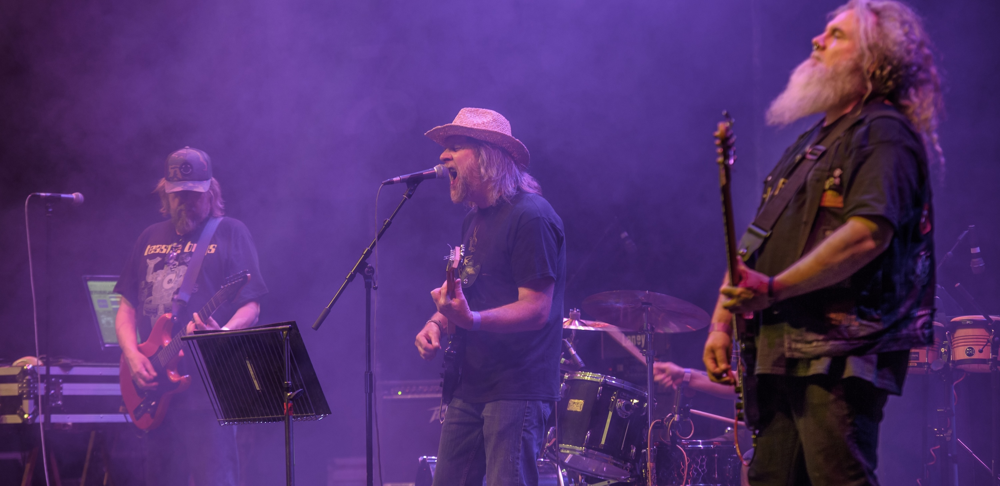

"A powerful blend of electronics and space rock with a modern edge."
— Louder Than War
"Expansive, immersive and driven by a relentless low-end."
— Prog Magazine
"A furious 20-minute cosmic tour de force that blasts you into a relentless space rock odyssey."
— Rich Deakin, Vive Le Rock (8/10)
"A deep psychedelic experience… solid musicianship and production."
— Psychedelic Baby Magazine
"Atmospheric, immersive and richly textured."
— Outlaws of the Sun
"Dark, hypnotic and sonically rich."
— RNR Magazine
Lords of Form is a UK psychedelic rock band creating immersive, cinematic music where space rock, progressive rock and analogue electronics converge. Formed by guitarist, songwriter and producer Niall Hone, the band has developed a distinctive sound that balances expansive improvisation with carefully crafted songwriting, drawing inspiration from folklore, landscape and the atmospheric traditions of British psychedelia.
Since the release of Flying Chromium Society in 2022, Lords of Form has continued to expand its catalogue with 23 Strangers, Hypnotise the World, Our Shared Humanity and Fallow & Fain, earning positive coverage from the UK and international psychedelic and progressive music press while steadily building a loyal following.
The current line-up features Niall Hone (guitar and electronics), Tony Whiting (vocals and guitar), George Cobbold (bass) and Luke Goodchild (drums). Together they bring decades of experience from across the British psychedelic and underground rock scene, delivering powerful live performances built around atmosphere, dynamics and musical exploration.
Although Hone's years with Hawkwind form an important chapter in the band's story, Lords of Form has established an identity entirely its own. Rather than revisiting familiar ground, the band continues to push forward, combining analogue textures, driving rhythms and expansive guitars into music that feels both rooted in classic psychedelia yet unmistakably contemporary.
Rehearsing on the South Downs in Sussex UK, within sight of the Long Man of Wilmington, Lords of Form continues to create music inspired by landscape, mythology and the unknown, carrying the spirit of psychedelic rock into new territory.

Guitar • Electronics • Production
Vocals • Guitar
Bass
Drums
Hawkwind • King Buffalo • Elder • Earthless • Ozric Tentacles • Ash Ra Tempel